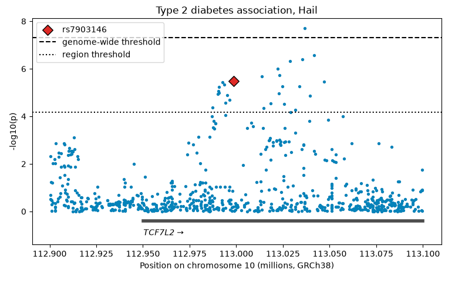
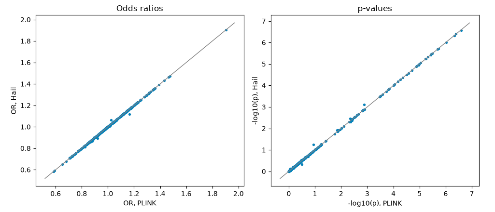

4.3 A GWAS with Hail (Python)
Omics series, class 3 of 7 · Python + Hail · 120 minutes
Open the notebook on GitHub Omics series overview Omics for Beginners
Overview
Hail is the Python library All of Us uses for its own large genomic analyses, including the All by All results. In this class we run the same GWAS as 4.2 in Hail, on the same people, and check that the two tools agree. You don’t need to know Python already: the notebook has a guide for R users.
Why this class matters
Two reasons. Reproducibility: a result that changes with the software is a warning sign, and checking a key finding with a second tool is good practice. Scale: PLINK is fast on one computer, but genome-wide analyses of hundreds of thousands of genomes need a tool that can spread the work over a cluster, and Hail is built for that.
By the end you’ll be able to
- Explain what Hail is, and how a MatrixTable holds genomic data
- Read part of the All of Us genomes with Hail, and save a small working copy (a checkpoint)
- Run QC and a logistic-regression GWAS with Hail
- Turn Hail results into a pandas table, and plot them
- Compare Hail’s results with PLINK’s, and explain the small differences
Analysis at a glance
| ❓ Question | Does a second tool, Hail, give the same GWAS results as PLINK? |
| 🧪 The analysis | The same QC and logistic regression per variant as 4.2, in Hail; then a variant-by-variant comparison with PLINK |
| 🎯 Why | Reproducibility, and learning the tool All of Us uses at scale |
| ✅ What we conclude | Whether the tools agree, and why small differences arise |
| ⚠️ What it can’t tell us | Nothing new about diabetes: this class is about tools and data structures |
| 🔗 Connections | Compares with 4.2; the approach behind the All by All results in 4.4 |
Time and cost
| ⏱️ Class time | 120 minutes |
| ⏱️ Run time | about 5 minutes. Slowest: reading the genomes into the checkpoint (2–3 minutes) |
| 💰 Cost | about $1 per student: no BigQuery query; the app (about $0.27 an hour) |
| 📋 Before class | run 4.1 and 4.2 (this class uses their sample and PLINK results) |
Class plan
| Time | Part | You do |
|---|---|---|
| 0:00 | 1. Key concepts: Hail and Spark, MatrixTables, lazy evaluation, splitMT, Python for R users |
listen, ask |
| 0:25 | 2. Setup and samples | run the cells |
| 0:35 | 3. Read the genomes with Hail: start the checkpoint (2–3 min), talk while it runs | ✋ Try It Out 1 (5 min) |
| 0:55 | 4. Quality control | run the cells |
| 1:10 | ☕ Break (5 min) | |
| 1:15 | 5. Run the GWAS | run the cells |
| 1:25 | 6. Results and plots | ✋ Try It Out 2 (5 min) |
| 1:40 | 7. Compare with PLINK; scaling up | ✋ Try It Out 3 (5 min) |
| 1:55 | Wrap-up | discuss |
Key concepts
The MatrixTable
| Part | In All of Us | Example fields |
|---|---|---|
| Rows | variants | locus, alleles |
| Columns | people | s (the participant’s ID) |
| Entries | one person’s genotype at one variant | GT |
| Globals | facts about the whole dataset |
Lazy evaluation
Hail plans first and works later: filtering and annotating only add to the plan, and finish instantly. Nothing is read until you ask for an answer (a count, a table, a file). So one cell, the checkpoint, does all the slow work: it reads our window for all 535,000 people, keeps our 5,000, and saves a small copy that every later step reads in seconds.
splitMT: one row per ALT allele
All of Us provides Hail genomes in two versions. multiMT keeps a variant with several ALT alleles in one row; splitMT, which we use, splits it into one row per ALT allele, because regression needs one allele per row. So Hail has more rows than PLINK for the same window.
Python for R users
| Idea | R | Python |
|---|---|---|
| Load a package | library(dplyr) |
import pandas as pd |
| Data frame | tibble | pandas DataFrame |
| Use a function on an object | df %>% filter(...) |
a method: mt.filter_rows(...) |
| Text with values | str_glue("{x} people") |
f"{x} people" |
| Counting from | 1 | 0 |
Follow along in the Workbench
- Start your app and pull the newest notebooks, as in 4.1.
- Open
notebooks/omics/4.3 gwas_hail.ipynb. Check the kernel says Python 3. - Run the setup cell. Hail prints a lot, including two expected warnings (about Java 17 and the Spark version): both are harmless.
pip install into this app
Installing other Python packages can replace ones Hail needs. In our tests, installing PheTK downgraded numpy and stopped Hail from loading. If it happens, ask your instructor for the repair commands.
Try It Out
The repeat (STR) that topped 4.2 is at position 113,036,665. How many rows does it have in Hail’s MatrixTable?
✅ Check: about 15 rows: one per ALT allele. In PLINK’s files it was one row.
How many rows pass the region threshold, and how many the genome-wide threshold?
✅ Check: the region threshold is a little stricter than in 4.2, because splitting gives more rows to test.
Rerun the GWAS with test="firth" instead of "wald". Does rs7903146’s p-value change?
✅ Check: almost no change: Firth regression matters for rare alleles, and rs7903146’s T allele is common.
Code walk-through
Keep our window and our people
- 1
-
Keep only variants in our 200,000-letter window (like PLINK’s
--chr --from-bp --to-bp). - 2
-
Keep only the people in our sample table (like a semi-join in R, or PLINK’s
--keep). - 3
-
Add each person’s phenotype and covariates:
samples_ht[mt.s]means “the row of the sample table matching this person’s ID”. All three lines are instant: they only add to the plan.
The checkpoint
- 1
- Run the plan and save the result to the app’s disk: the slow step (150 seconds in our test).
- 2
- If the copy already exists (e.g. when rerunning), just open it.
The GWAS
- 1
-
The covariates.
1.0is the intercept: Hail needs it written out (R and PLINK add it for you).[... for pc in PCS]builds a list of the 10 PCs. - 2
- The standard Wald test.
- 3
- The outcome: case or control.
- 4
- The genotype as 0, 1, or 2 copies of the ALT allele.
What we found
Results from our test run in October 2026 (CDR v9).
| Checkpoint | 150 seconds; 12,054 rows × 5,000 people |
| QC: rows failing each filter | frequency 10,970; call rate 4,405; Hardy-Weinberg 129 (a row can fail several) |
| Tests | 765, of which 488 matched a PLINK variant |
| Agreement with PLINK | correlation 0.9998 for log odds ratios, 0.9999 for −log₁₀(p) |
| rs7903146 (T allele) | OR 1.2512 in Hail vs 1.2511 in PLINK; p = 3 × 10⁻⁶ in both |
💬 Discuss:
- Why do only 488 of 765 tests match PLINK? (Split multi-allelic rows, especially repeats, are trimmed differently; and the frequency filter works per allele in Hail, per variant in PLINK.)
- The regional plot showed two clusters: one at rs7903146 and one a little to the right, with the top hit. One signal or two? A conditional analysis (adding rs7903146 as a covariate) would tell.
The plots


Instructor notes
- Start the checkpoint cell before explaining lazy evaluation, so the 2–3 minutes pass while you talk.
- If the checkpoint is interrupted, a half-written copy is left behind: set
REBUILD = Trueand rerun. - Expect the question “why learn Hail if PLINK is faster here?” Answer: scale, and All of Us’s own tools and tutorials use it.
Key takeaways
- Hail works with genomes as a MatrixTable: variants × people
- Hail is lazy: it plans until you ask for a result; checkpoint after the expensive step
splitMTgives one row per ALT allele- The same model in PLINK and Hail gives the same answers: a reproducibility check
- Hail scales to the whole genome on a cluster
Further reading
Next
4.4 PheWAS: flip the question. Which diseases are linked to rs7903146?